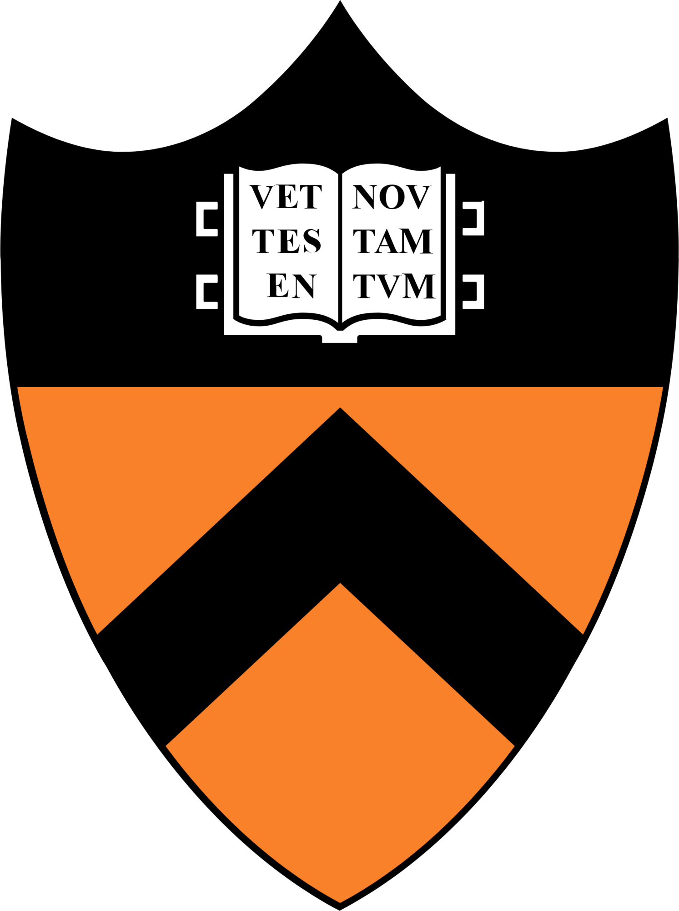

May 2026
One new preprint on the training VLM with long-horizon RL on video games is now available on arXiv.
I am a third-year undergraduate at Fudan University, majoring in Statistics. My earlier research was at the intersection of statistics and machine learning, focused on conformal prediction.
More rescently, my interests have broadened toward the science of foundation models. I hope to understand the phenomena that occur during the training and emergence of models in a scientific way (controled experiments/mathmetical framework). Currently I'm working on adaptive computation, looped architectures, and what reinforcement learning actually does on top of pretrained priors. In the long run, I hope to help build a science of foundation models that produces rules we can predict with, not just descriptions that explain after the fact.
I am currently seeking a PhD position for Fall 2027. Please feel free to reach out by email if you are interested in my research or background.
May 2026
One new preprint on the training VLM with long-horizon RL on video games is now available on arXiv.
May 2026
One paper is accepted to ICML 2026!
February 2026
Our new preprint on the coverage-length metric of conformal prediction is now available on arXiv.
December 2025
I was honored to receive the Zheng Zukang Scholarship.
October 2025
I was honored to receive the National Scholarship.
September 2025
Our new preprint on the interpretability of conformal prediction is now available on arXiv.
June 2025
One paper was accepted by ICML 2025 Workshop.
December 2024
I am going to visit Yang Yuan at THU IIIS.
April 2024
I started my research supervised by Jiaye Teng.
Department of Statistics and Data Science, Fudan University
BSc in Statistics, Zhuoyan Honor Program
Expected 2027

Princeton Language Intelligence, Princeton University
Research Intern, focus on agentic reinforcement learning & VLM
Hosts: Prof. Chi Jin and Chengshuai Shi
January 2026 - Present
Institute for Interdisciplinary Information Sciences, Tsinghua University
Research Intern, focus on looped transformer & adaptive computing
Host: Prof. Jingzhao Zhang
December 2025 - Present
Big AI Dream Lab, Shanghai AI Laboratory
Research Intern, focus on LLM post-train & formal language (Dafny)
Host: Jie Fu
July 2025 - October 2025
School of Statistics and Data Science, Shanghai University of Finance and Economics
Research Assistant, focus on conformal prediction
Host: Prof. Jiaye Teng
April 2024 - Present
* denotes equal contribution.
Optimization Methods and Applications
Teaching Assistant · School of Management, Fudan University
Fall 2025